A investigação criminal moderna enfrenta desafios crescentes relacionados à complexidade das organizações criminosas contemporâneas. Diferentemente dos crimes tradicionais, onde a autoria e os meios empregados são frequentemente evidentes, os crimes praticados por organizações estruturadas apresentam múltiplas camadas de relacionamentos, fluxos financeiros complexos e hierarquias sofistica das que dificultam a compreensão da real dimensão das atividades ilícitas. Neste contexto, a análise de vínculos emerge como uma técnica importante, definida no âmbito da investigação criminal como um método sistemático de identificação, registro e análise das conexões existentes entre pessoas, organizações, objetos e eventos relacionados a atividades criminosas.
Esta técnica permite aos investigadores visualizarem e compreenderem a estrutura, o funcionamento e as vulnerabilidades de redes criminosas complexas através da representação gráfica de relacionamentos que, de outra forma, perma neceriam ocultos em meio ao volume de informações investigativas. A importância da análise de vínculos na investigação justifica-se pela crescente complexidade do crime organizado, que opera por meio de estruturas sofisticadas utilizando empresas de fachada, intermediários financeiros e tecnologias avançadas para ocultar suas atividades.
A análise tradicional de documentos isolados evidencia-se insuficiente para compreender essas estruturas complexas, enquanto a análise de vínculos oferece uma abordagem sistemática que revela padrões e conexões não evidentes por meio de métodos convencionais.
As investigações contemporâneas geram volumes massivos de informações provenientes de quebras de sigilo bancário, telefônico, telemático, fiscal, entre outros. A análise de vínculos oferece metodologia estruturada para organizar, cor relacionar e extrair inteligência desses grandes volumes de dados, transformando informações dispersas em conhecimento relevante.
A análise de vínculos também permite identificar rapidamente os elementos centrais de uma organização criminosa, otimizando a alocação de recursos investigativos e direcionando esforços para os alvos mais relevantes. Esta eficiência investigativa resulta em economia de tempo e recursos, permitindo que as forças policiais concentrem seus esforços nos pontos que produzirão maior impacto na desarticulação das organizações criminosas.
A análise de vínculos fundamenta-se cientificamente na Teoria dos Grafos, ramo da matemática desenvolvido no século XVIII pelo matemático suíço Leonhard Euler. A origem desta teoria remonta ao famoso problema das Sete Pontes de Königsberg, onde Euler demonstrou matematicamente a impossibilidade de atravessar todas as pontes da cidade sem repetir nenhuma, estabelecendo os fundamentos para o estudo sistemático de redes e conexões.
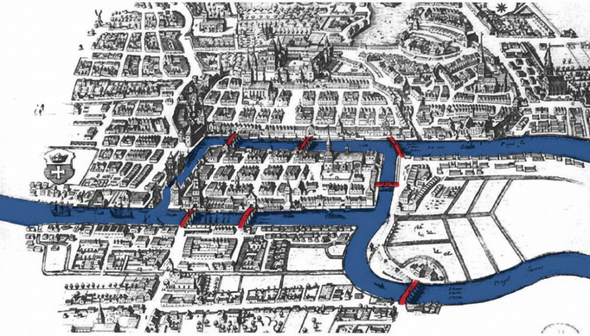
Figura 4 - Ilustração do problema das Sete Pontes de Königsberg
Na Teoria dos Grafos, um grafo é definido como uma estrutura matemática composta por um conjunto de nós conectados por arestas. Esta representação abstrata permite modelar matematicamente qualquer sistema onde existam entidades e relacionamentos entre elas, fornecendo a base teórica para a análise sistemática de redes complexas.
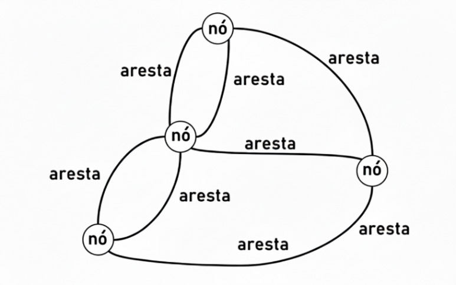
Figura 5 - Representação de um grafo com nós e arestas.
A transposição destes conceitos para a investigação criminal ocorreu através do desenvolvimento da Social Network Analysis (SNA), que, conforme definido por Wasserman e Faust (1994), fornece ferramentas para compreender como pessoas ou organizações estão conectadas, encontrar estruturas ocultas que possam existir e identificar atores potencialmente importantes dentro de uma rede social.
A aplicação da Social Network Analysis na investigação criminal baseia-se em princípios científicos sólidos, conforme demonstrado por diversos estudos acadêmicos ao longo das últimas décadas.
Sparrow (1991) foi pioneiro na aplicação de técnicas de análise de redes para investigação criminal, demonstrando como a SNA pode revelar estruturas organi zacionais ocultas em redes criminosas. Seu trabalho estabeleceu os fundamentos teóricos para a aplicação investigativa da técnica, mostrando que organizações criminosas seguem padrões estruturais identificáveis e analisáveis.
Klerks (2001) expandiu a aplicação da SNA para investigação de crime organizado, desenvolvendo metodologias específicas para análise de organiza ções criminosas complexas. Seus estudos demonstraram a eficácia da técnica na identificação de lideranças e vulnerabilidades estruturais, estabelecendo protocolos que influenciam ainda hoje a prática investigativa internacional.
Morselli (2009) aprofundou a compreensão sobre como as redes criminosas se adaptam à pressão policial, fornecendo insights valiosos sobre estratégias investi gativas mais eficazes e sobre a dinâmica evolutiva das organizações criminosas.
A fundamentação teórica da análise de redes foi significativamente expan dida por Barabási (2016), que em sua obra “Network Science” estabeleceu os princípios matemáticos e computacionais das redes complexas, demonstrando como propriedades emergentes surgem da interação entre elementos individuais e fornecendo o arcabouço científico necessário para compreender fenômenos de conectividade em sistemas sociais, biológicos e tecnológicos.
No contexto brasileiro, Ferro Júnior e Dantas (2006) foram precursores no estudo da análise de vínculos, demonstrando sua eficácia em casos de crime organizado e estabelecendo as primeiras metodologias adaptadas à realidade investigativa nacional.
Romão (2013) abordou a aplicação para investigações de corrupção, desen volvendo técnicas específicas para mapear redes de corrupção no setor público e estabelecendo protocolos que consideram as particularidades do sistema jurídico brasileiro.
Zaina (2020) desenvolveu metodologia combinando business intelligence e análise de vínculos para análise de Relatórios de Inteligência Financeira, demonstrando redução no tempo de análise e aumento na precisão na identificação de suspeitos principais.
Mais recentemente, Cunha (2021) desenvolveu metodologias avançadas de “Criminofísica” aplicadas à análise de facções criminosas brasileiras, utilizando conceitos de redes complexas para identificar alvos topológicos de alto retorno e estratégias de neutralização seletiva, demonstrando como a ciência de redes pode ser aplicada de forma prática e eficaz no combate ao crime organizado nacional.
Investigações de Lavagem de Dinheiro representam uma das aplicações mais eficazes da técnica, considerando a complexidade dos esquemas de lavagem, envolvendo múltiplas transferências bancárias, empresas de fachada e jurisdições internacionais, entre outros mecanismos de ocultação ou dissimulação dos ativos financeiros. A análise de vínculos permite rastrear fluxos financeiros complexos, identificar os beneficiários finais de operações ilícitas e revelar estruturas de ocultação que seriam impossíveis de compreender através da análise tradicional de extratos financeiros isolados.
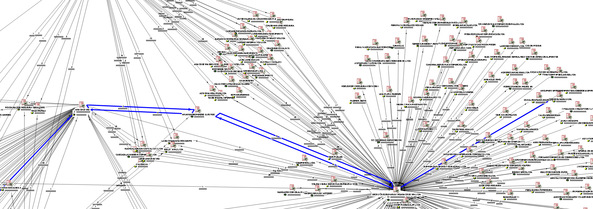
Figura 6 - Diagrama meramente ilustrativo com transações bancárias entre contas analisadas
em investigação de lavagem de dinheiro.
Investigações de tráfico, seja de drogas, armas ou pessoas, encontram na análise de vínculos uma ferramenta valiosa para mapear redes de distribuição, identificar fornecedores e distribuidores, revelar rotas de transporte e compreender a estrutura organizacional dessas redes criminosas. A análise de vínculos permite, como exemplo, visualizar como essas organizações se estruturam e se comunicam.
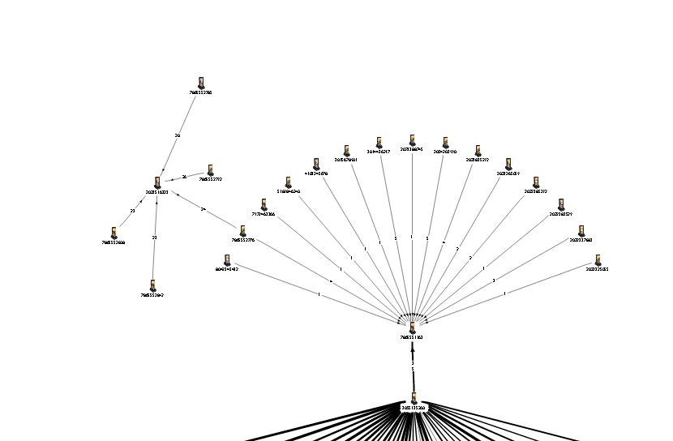
Figura 7 - Diagrama meramente ilustrativo com fluxo de chamadas telefônicas entre suspeitos
de tráfico de drogas.
O combate ao crime organizado constitui outra área de aplicação fundamen tal, uma vez que organizações criminosas estruturadas apresentam hierarquias complexas, divisão de tarefas e múltiplos níveis operacionais que podem ser eficazmente mapeados através da Análise de Vínculos. A técnica revela essas estru turas organizacionais, permitindo identificar lideranças, operadores intermediários e vulnerabilidades organizacionais que podem ser exploradas estrategicamente pelas forças policiais.
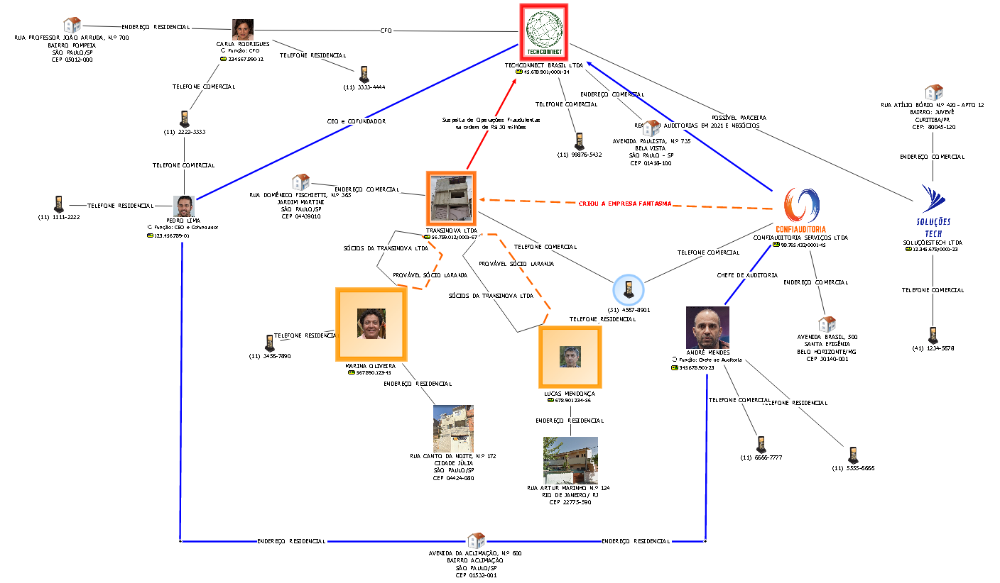
Figura 8 - Diagrama meramente ilustrativo com estrutura de organização criminosa.
Investigações de corrupção beneficiam-se significativamente da técnica, pois esquemas de corrupção frequentemente envolvem redes complexas de funcionários públicos, empresários e intermediários cujos relacionamentos podem não ser evidentes por meio de métodos investigativos tradicionais. A análise de vínculos permite mapear essas redes e demonstrar padrões de relacionamento que evidenciam a prática corrupta, incluindo a identificação de intermediários, facilitadores e beneficiários finais dos esquemas.
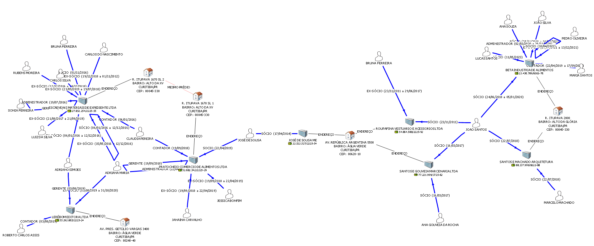
Figura 9 - Diagrama meramente ilustrativo com estrutura societária de empresas suspeitas
de fraudes em licitações e corrupção.
Investigações financeiras em geral se beneficiam da capacidade da análise de vínculos de revelar estruturas societárias complexas e fluxos financeiros ocultos. A técnica permite identificar relacionamentos entre pessoas e empresas aparen temente independentes, revelar estruturas de controle societário e mapear fluxos financeiros que indicam operações suspeitas.
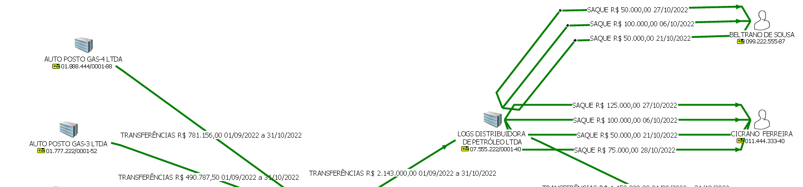
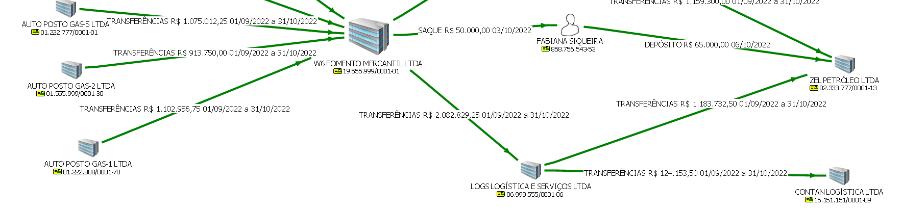
Figura 10 - Diagrama meramente ilustrativo com operações financeiras contidas em um
Relatório de Inteligência Financeira (RIF).
Estes exemplos acima evidenciam como a análise de vínculos tem capacidade de transformar informações complexas e dispersas em representações visuais compreensíveis, permitindo que investigadores identifiquem padrões que seriam impossíveis de perceber através da análise tradicional de documentos. Esta visu alização de complexidade facilita a compreensão de estruturas organizacionais intrincadas e revela relacionamentos que permaneceriam ocultos em análises convencionais.
A análise de vínculos permite identificar rapidamente os elementos mais importantes de uma rede criminosa, seja através da análise visual direta ou da aplicação de métricas quantitativas de centralidade. Esta identificação de elementos centrais orienta a estratégia investigativa, permitindo que os recursos sejam concentrados nos alvos que produzirão maior impacto na desarticulação da organização criminosa.
Frequentemente, a análise de vínculos revela conexões não evidentes entre elementos aparentemente desconectados, expandindo o escopo da investigação e identificando novos alvos ou linhas de investigação. Esta descoberta de conexões ocultas pode levar à identificação de ramificações da organização criminosa que não eram conhecidas ou suspeitas pelos investigadores.
E o impacto probatório dos diagramas bem construídos é notável em apresen tações judiciais, facilitando a compreensão de casos complexos por promotores, advogados e juízes. A capacidade de apresentar evidências de forma visual e compreensível pode ser determinante para o sucesso de processos judiciais envolvendo organizações criminosas complexas.
A evolução das ferramentas utilizadas para análise investigativa reflete o desenvolvimento tecnológico e a crescente complexidade dos crimes modernos. Tradicionalmente, quando investigadores precisavam mapear conexões entre suspeitos e evidências, utilizavam métodos rudimentares que, embora intuitivos, apresentavam limitações sérias que comprometiam a eficácia da investigação.
Os métodos tradicionais incluíam quadros com fotografias conectadas por barbantes, anotações em post-its e fichas de papel, além da organização manual de documentos em pastas e arquivos físicos. Estes métodos, embora permitissem uma visualização básica das conexões, apresentavam fragilidade física significa tiva, pois fotos podiam cair, barbantes se romper e anotações se perder. Além disso, era impossível criar backups seguros de todo o trabalho desenvolvido, e a dificuldade de compartilhamento limitava a colaboração entre investigadores. Casos com muitos envolvidos tornavam-se inviáveis de mapear fisicamente, e não havia possibilidade de realizar análises quantitativas ou aplicar métricas sobre a rede mapeada.
O desenvolvimento de ferramentas computacionais especializadas revolucionou a capacidade investigativa, oferecendo capacidade de processar grandes volumes de dados, funcionalidades analíticas avançadas, facilidade de compartilhamento e colaboração entre equipes, além de backup seguro e controle de versões. Esta evolução tecnológica permitiu que investigadores superassem as limitações físicas dos métodos tradicionais e desenvolvessem análises mais sofisticadas e precisas.
Figura 11 - Comparação da análise de vínculos por um método tradicional (à esquerda) e
um método tecnológico (à direita).
Neste sentido, o programa i2 representa o estado da arte em ferramentas de análise de vínculos para investigação criminal. Desenvolvido especificamente para atender às necessidades de agências de aplicação da lei, o é utilizado por organizações policiais em todo o mundo, incluindo a Polícia Federal brasileira, estabelecendo-se como padrão internacional para este tipo de análise.
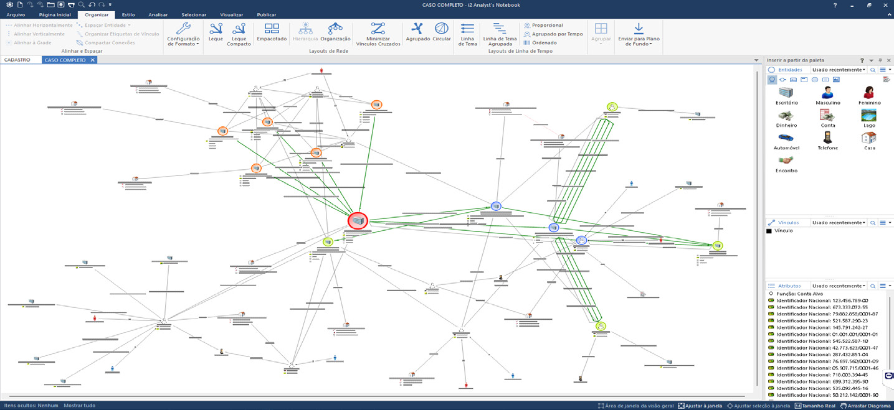
Figura 12 - Interface principal do programa i2 Analyst’s Notebook.
A especialização investigativa do programa i2 diferencia-o de ferramentas genéricas de visualização, por ser projetado desde o início especificamente para investigação criminal, incorporando funcionalidades e terminologia adequadas ao contexto policial. Esta especialização manifesta-se na biblioteca de símbolos específicos para entidades investigativas, nos tipos de vínculos pré-configurados para relacionamentos criminais e nas funcionalidades analíticas desenvolvidas especificamente para necessidades investigativas.
A capacidade de processamento do software permite lidar com grandes volumes de dados investigativos, desde casos simples com poucas entidades até investigações complexas envolvendo milhares de elementos. Esta escalabilidade é fundamental para investigações modernas, que frequentemente envolvem análise de registros telefônicos com milhões de ligações, extratos bancários com milhares de transações e bases de dados societárias com centenas de empresas relacionadas.
As funcionalidades analíticas incluem ferramentas avançadas como cálculos de conexões, identificação de caminhos, detecção de padrões e análises geográfica e temporal. Estas funcionalidades permitem que investigadores realizem análises quantitativas sofisticadas que complementam a análise visual tradicional.
O i2 é um conjunto de ferramentas, uma suíte de aplicações, cada uma com uma finalidade específica, que podem operar de forma independente ou integrada para potencializar a capacidade analítica. Atualmente, as principais ferramentas são o Analyst’s Notebook, o iBase e o Analysis Hub.
O i2 Analyst’s Notebook é a ferramenta central do conjunto e o foco do curso apresentado nas fontes. Ele é um aplicativo para desktop, instalado na máquina do usuário, cuja função primária é a criação de diagramas de análise de vínculos. É nesta ferramenta que os analistas transformam dados brutos em representações visuais, permitindo a exploração de conexões, conjuntos e caminhos entre diversas entidades como pessoas, empresas e telefones.
O i2 iBase funciona como um banco de dados próprio para o i2. Ele foi proje tado para armazenar e gerenciar grandes volumes de dados de forma estruturada e relacional, servindo como um repositório central para as informações de uma ou mais investigações.
O i2 Analysis Hub é um ambiente de inteligência que permite que as equipes trabalhem juntas em investigações, combinando dados de diversas fontes e utili zando ferramentas de análise visual em um repositório centralizado e seguro. É uma plataforma que integra e amplia as capacidades oferecidas pelas ferramentas Analyst’s Notebook e iBase, mas com uma arquitetura mais moderna, baseada na web e focada no trabalho em equipe em tempo real.
De forma geral, independente da ferramenta em uso, o i2 organiza as informações por meio de dois componentes fundamentais: Entidades e Vínculos.
As entidades são objetos que servem para representar coisas reais, enquanto os vínculos representam o tipo de relacionamento entre tais objetos. Como exemplo da imagem abaixo, os itens “João da Silva” e “Clarisse Ferreira da Silva” são entidades e “Casados” é o vínculo entre eles.
Figura 13 - Representação de Entidades e Vínculos.
Como dito, as entidades são objetos que representam coisas reais em um diagrama. Podem ser pessoas, empresas, locais, eventos, contas bancárias, tele fones, veículos, ou qualquer outro elemento relevante para a investigação. Uma entidade é composta por várias partes, sendo as quatro principais: ícone, etiqueta, atributos e identidade. Enquanto as 3 primeiras são aparentes no diagrama, a identidade é uma informação “interna” da entidade.
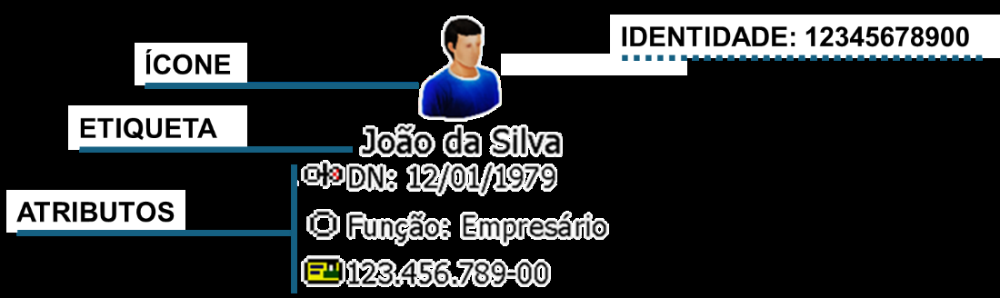
Figura 14 - Partes principais de uma Entidade: ícone, etiqueta, atributos e identidade.
Ícone é uma representação gráfica, uma imagem que permite a identificação visual rápida do tipo de objeto. Por exemplo, um ícone genérico de uma pessoa, a fotografia de um indivíduo específico, o logotipo de uma empresa ou a foto da sua fachada. A escolha do ícone ajuda a entender do que se trata a entidade com um simples olhar.
Etiqueta é uma breve descrição textual que aparece logo abaixo do ícone para identificar a entidade. Exemplos incluem o nome de uma pessoa, a razão social de uma empresa, o número de um terminal telefônico ou a descrição de um evento. A etiqueta complementa o ícone, fornecendo uma identificação textual clara.
Atributos são informações adicionais e características que você pode atribuir à entidade, como data de nascimento, profissão, números de documentos, apeli dos, entre outros. É crucial entender que os atributos não servem somente para a análise visual; eles são fundamentais para a utilização dos recursos analíticos da ferramenta. Com base nos atributos, é possível realizar pesquisas, aplicar filtros (ex: “encontrar todos os empresários”) e outras análises que seriam impraticáveis em diagramas grandes se feitas somente “no olho”.
Identidade é o elemento mais importante de uma entidade e o conceito fundamental do i2. A identidade é um código ou ID exclusivo que indivi dualiza a entidade, garantindo que ela seja única no diagrama. Exemplos comuns são o CPF para pessoas físicas e o CNPJ para empresas. A identidade fica “embutida” na entidade, não sendo visível diretamente no diagrama, assim como uma pessoa não anda com o CPF estampado na testa.
Figura 15 - Configuração da Identidade de uma Entidade.
A identidade constitui o elemento mais crítico e fundamental de qualquer entidade em um diagrama de análise de vínculos, funcionando como um código ou identificador único que individualiza cada elemento, garantindo que seja reconhecido de forma singular pelo sistema. Diferentemente da etiqueta, visível no diagrama e serve para identificação visual, a identidade permanece “embutida” na entidade, funcionando como uma impressão digital que permite ao i2 reconhecer automaticamente quando diferentes informações se referem ao mesmo objeto real.
Esta distinção é crucial porque, assim como uma pessoa não anda com seu CPF estampado na testa, a identidade não aparece diretamente no diagrama, mas é o mecanismo interno que garante a integridade e precisão de toda a análise. A importância da identidade transcende aspectos meramente técnicos, pois sua definição adequada determina se o diagrama refletirá fielmente a realidade inves tigada ou se apresentará uma visão distorcida, onde a mesma pessoa, empresa ou objeto aparece fragmentado em múltiplas entidades, ocultando conexões essenciais e comprometendo a identificação de padrões criminosos.
No contexto investigativo, a identidade assume papel ainda mais crítico, pois a mesma pessoa ou empresa pode aparecer em diferentes documentos com variações na grafia, formatos distintos de documentos ou até mesmo com informa ções parcialmente incorretas. Sem uma identidade padronizada, essas variações resultarão em entidades separadas no diagrama, fragmentando informações que deveriam estar consolidadas.
A padronização de identidades refere-se ao estabelecimento de formatos únicos e consistentes para representar identificadores no sistema. Este processo é fundamental porque pequenas variações na formatação podem fazer com que o software trate a mesma entidade como objetos distintos, comprometendo toda a análise subsequente.
Para pessoas físicas, o Cadastro de Pessoas Físicas (CPF) constitui o iden tificador único mais confiável no contexto brasileiro. O formato padronizado estabelecido é de 11 algarismos com zeros à esquerda, sem pontos e sem hífen. Exemplos corretos: 12345678901, 00123456789 e 98765432100.
A manutenção de zeros à esquerda é fundamental, pois muitos sistemas removem automaticamente esses zeros quando tratam o CPF como número. O CPF “012.345.678-90” deve ser padronizado como “01234567890”, nunca como “1234567890”.
Para estrangeiros ou casos nos quais o CPF não está disponível, deve-se utilizar identificador alternativo consistente, como o número do passaporte precedido do código do país, sempre documentando a exceção nos atributos da entidade.
.
Figura 16 - Exemplo de Identidade padrão para Pessoa Física
Para pessoas jurídicas, o Cadastro Nacional da Pessoa Jurídica (CNPJ) é o identificador padrão. O formato estabelecido é de 14 algarismos com zeros à esquerda, sem pontos, barra e hífen. Exemplos corretos: 12345678000195, 00123456000189 e 98765432000100.
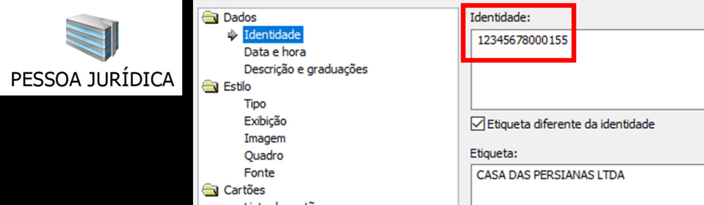
Figura 17 - Exemplo de Identidade padrão para Pessoa Jurídica.
O Brasil utiliza dois formatos de placas veiculares que devem ser padronizados adequadamente:
As letras devem sempre ser convertidas para maiúsculas e o hífen deve ser mantido na posição correta. Placas que não seguem os padrões oficiais brasileiros devem ser sinalizadas para verificação adicional.
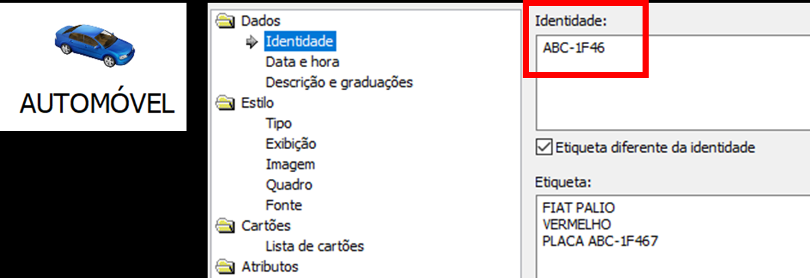
Figura 18 - Exemplo de Identidade padrão para Pessoa Física.
Todos os números telefônicos devem seguir o formato internacional: símbolo “mais” + código do país + código de área + número do telefone. Exemplos para números brasileiros: +5511987654321 (celular de São Paulo) e +5521123456789 (fixo do Rio de Janeiro).
Para números brasileiros, sempre utilizar +55 como código do país, manter o código de área com 2 dígitos e incluir o dígito 9 adicional para celulares, mesmo em registros históricos anteriores a 2012.
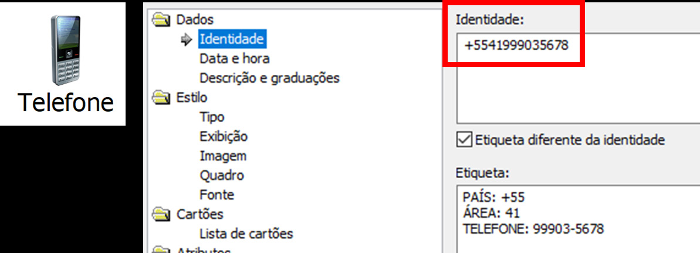
Figura 19 - Exemplo de Identidade padrão para telefone.
O formato padrão para contas bancárias brasileiras é: código do banco (3 algarismos) + hífen + número da agência (4 algarismos) + hífen + número da conta (até 20 algarismos sem zeros à esquerda). Exemplos: 001-1234-567890 (Banco do Brasil) e 341-5678-123456789 (Itaú).
O código do banco deve seguir a tabela oficial do Banco Central, sempre com 3 dígitos, incluindo zeros à esquerda quando necessário. O código da agência também deve incluir os eventuais zeros à esquerda para compor seus 4 dígitos.
Figura 20 - Exemplo de Identidade padrão para conta bancária.
Endereços podem seguir formato estruturado: tipo de logradouro + logradouro + número + complemento + município/UF + CEP, sem pontuação, sem vírgulas e em letras maiúsculas. Exemplo: RUA AUGUSTA 123 APTO 45 SAO PAULO/SP 01305100.
Uma prática comum para tentar dirimir as inconsistências de endereço é evitar incluir bairros na identidade principal e utilizar somente os 8 dígitos do CEP sem hífen.
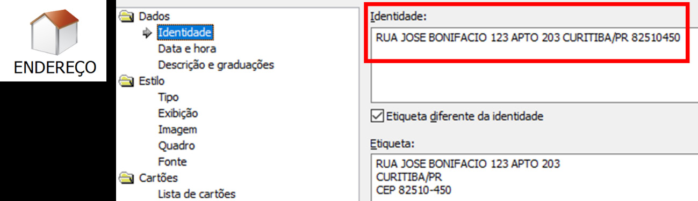
Figura 21 - Exemplo de Identidade padrão para endereço.
Por sua vez, os Vínculos permitem representar o relacionamento ou a interação entre as Entidades. Um vínculo pode representar uma amizade, um parentesco, uma transação financeira, uma chamada telefônica, uma relação societária etc. Os componentes principais de um vínculo são: etiqueta e direção.
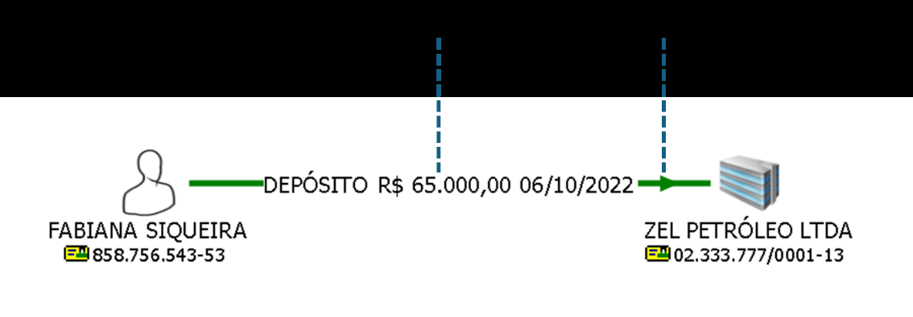
Figura 22 - Partes principais de um Vínculo: etiqueta e direção.
Etiqueta é o texto que descreve o relacionamento entre duas entidades, explicando a natureza da ligação. Exemplos: “pai de”, “sócio da”, “empregado da”, “saque de R$ 50 mil”.
Direção é o sentido do vínculo por meio de uma seta. A direção mostra o fluxo (ex.: a origem e o destino de uma transação financeira ou de uma chamada telefônica) ou ajuda a interpretar corretamente a relação (ex.: para indicar quem é o pai e quem é o filho). A interpretação de um vínculo com direção é sempre da origem para o destino da seta.
Uma característica fundamental dos vínculos é que eles não possuem identi dade. Isso é intencional para permitir que múltiplas interações idênticas entre as duas entidades possam ser registradas livremente. Por exemplo, uma pessoa pode fazer vários PIX de mesmo valor para outra no mesmo dia; se cada transação tivesse uma identidade única baseada nesses dados, só a primeira poderia ser registrada.
Figura 23 - Possibilidades de representação de entidade.
Cada entidade possui uma representação para determinar como ela é exibida na superfície do diagrama e um tipo para categorizá-la.
É possível escolher como exibir entidades na superfície do diagrama utilizando representações de entidades diferentes, por exemplo, ícone, caixa de evento ou linha de tema.
Representado por uma imagem ou figura, conforme a imagem abaixo:
Figura 24 - Figuras de representação do tipo ícone.
Uma linha usada para representar um elemento-chave de uma investigação, como um suspeito ou conta bancária. As linhas de temas são muitas vezes utilizadas com caixas de evento para representar uma sequência de eventos ao longo do tempo.
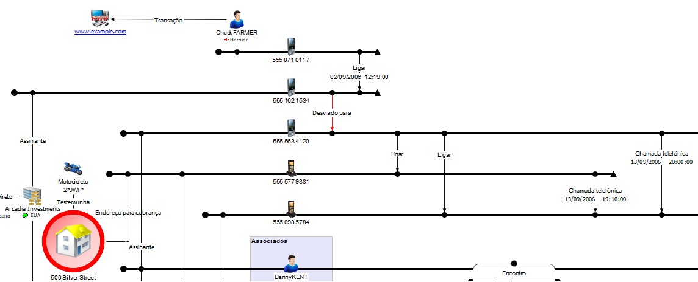
Figura 25 - Figuras de representação do tipo linha de tema.
Uma representação de uma ocorrência usada para enfatizar informações de data e hora, como uma reunião ou um compromisso. As caixas de evento são muitas vezes usadas com linhas de temas.
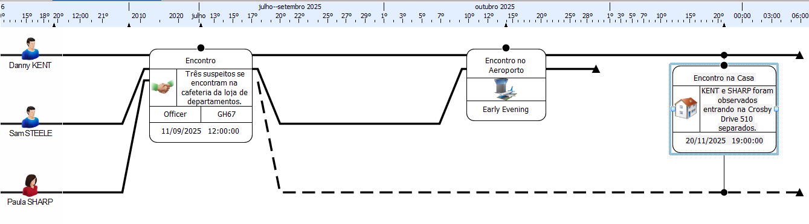
Figura 26 - Figuras de representação do tipo caixa de evento.
Geralmente utilizado para inteligência textual na superfície do diagrama ou para indicar uma organização ou um grupo visualmente.
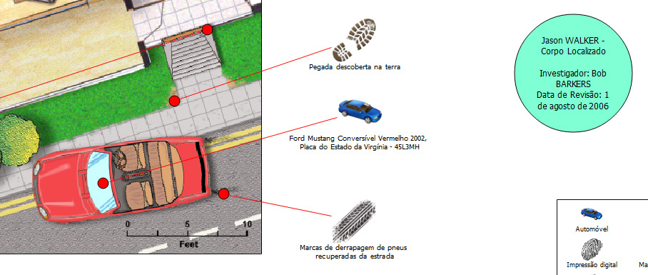
Figura 27 - Exemplo da representação do tipo círculo.
Geralmente usada para incluir outras entidades em um diagrama para indicar uma organização ou grupo visualmente.
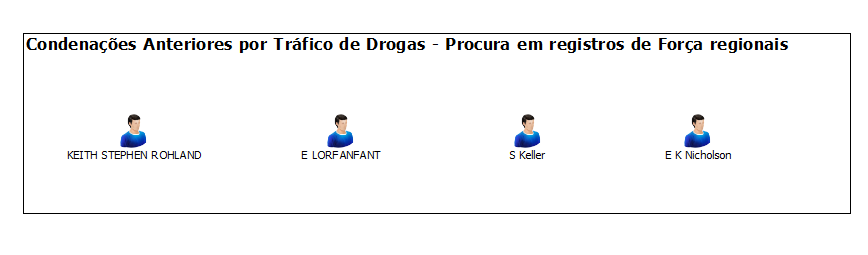
Figura 28 - Representação do tipo caixa.
O bloco de texto é usado frequentemente para inteligência textual na superfície do diagrama.
Figura 29 - Exemplo de representação do tipo bloco de texto.
Um objeto criado em outro aplicativo e incorporado no diagrama, por exemplo, uma planilha, um documento de processador de texto, videoclipe ou arquivo de diagrama.
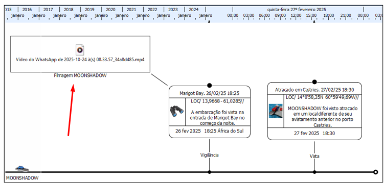
Figura 30 - Exemplo de representação do tipo objeto OLE.
A listagem de itens, cartões e registros de dados permite que as informações que eles contêm sejam classificadas, filtradas e copiadas para planilhas ou outros documentos externos. Isso permite analisar dados que não são necessariamente visíveis na superfície do diagrama.
Figura 31 - Exemplo de listagem de itens do diagrama.
Itens altamente conectados são frequentemente significativos em análise. É possível listar as entidades e os vínculos entre elas com base no número de vínculos presentes e, em seguida, mudar o formato dos itens selecionados para destacá-los no diagrama.
É possível optar por listar itens altamente conectados de acordo com vários critérios distintos. Por exemplo, é possível selecionar links de um tipo específico ou concentrar-se em links em uma determinada direção.
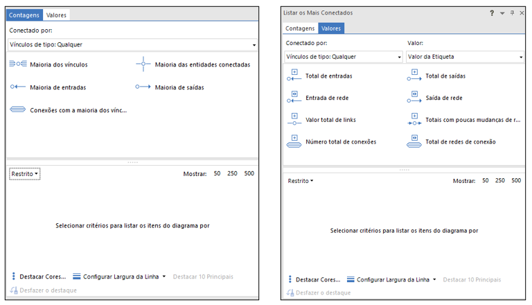
Figura 32 - Opções de listagem de itens conectados.
A área de janela Entidades Vinculadas lista as entidades vinculadas à entidade selecionada. Para identificar entidades potencialmente significativas, é possível classificar a lista nas diferentes propriedades.
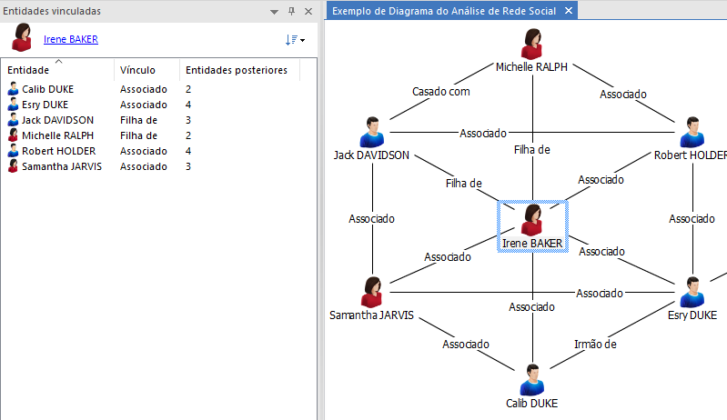
Figura 33 - Representação de área de janela entidades vinculadas.
Para localizar itens de diagrama que podem ser de interesse para sua investiga ção, você pode procurar propriedades do item para obter informações específicas.
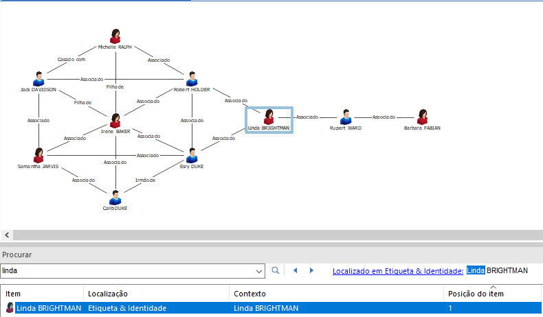
Figura 34 – Representação da procura por propriedades do item para obter informações espe
cíficas.
É possível criar uma procura estruturada, que busca dados em propriedades específicas de itens de diagrama. É possível localizar entidades ou descobrir relacionamentos.
A estrutura pode consistir em um tipo de entidade ou em dois tipos de entidade e um tipo de vínculo entre eles. Para cada parte da estrutura, é possível especificar que um item de diagrama deve ser de um tipo de item específico ou tipo semântico para satisfazer a consulta. Em seguida, é possível utilizar as condições de procura para incluir características do item para a consulta.
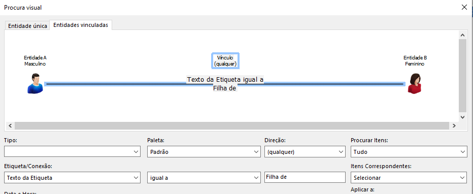
Figura 35 - Exemplo de opções de procura estruturada.
Procura palavras ou frases específicas nas informações do item. Por exemplo, é possível localizar todos os itens de diagrama que contêm um nome de rua ou número de telefone específico.
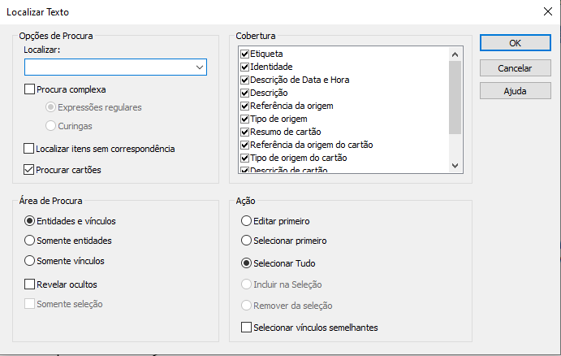
Figura 36 - Procura palavras ou frases específicas nas informações do item.
É possível resolver as correspondências potenciais inspecionando os resultados e decidindo qual ação executar. Ao incluir dados em um diagrama, é importante tentar assegurar que múltiplos itens não representem o mesmo objeto, evento ou relacionamento da realidade.
É utilizado para comparar itens de diagrama, identificar quaisquer entidades que representem o mesmo objeto da realidade e resolver as correspondências potenciais. Além da correspondência baseada nas etiquetas de entidade, também é possível procurar por entidades correspondentes potenciais com base em seus tipos semânticos e no conteúdo significativo. Ao identificar correspondências potenciais, você pode desejar selecionar as entidades correspondidas para melhor inspeção, vincular as entidades para inspeção posterior ou mesclar as entidades.
Para descobrir se várias entidades de interesse são conectadas por uma rede, é possível especificá-las como entidades requeridas em sua procura, em seguida, o Analyst’s Notebook pode procurar por uma rede que conecta todos eles, direta ou indiretamente. Se uma rede for encontrada, ela pode ajudá-lo a identificar os intermediários importantes. Por exemplo, é possível procurar uma rede que associa várias contas bancárias envolvidas em fraude. O resultado pode identificar uma conta intermediária que distribui dinheiro para essas contas e, possivelmente, desempenha um papel central na atividade fraudulenta. Se você determinar que a atividade desta conta intermediária é legítima, será possível excluí-la da procura e depois procurá-la novamente.
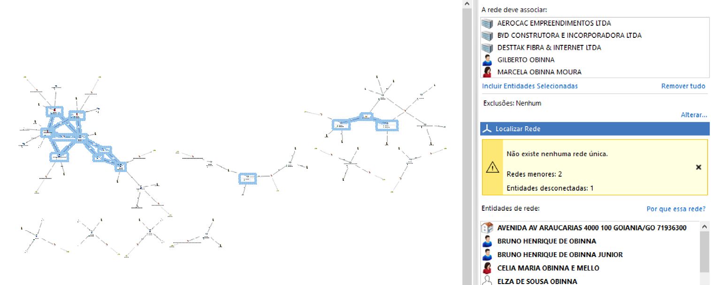
Figura 37 - Exemplo de busca de rede de conexão.
É possível descobrir se dois itens no diagrama são conectados, no entanto indiretamente, procurando um caminho entre eles. É possível configurar critérios para os quais os itens são permitidos no caminho.
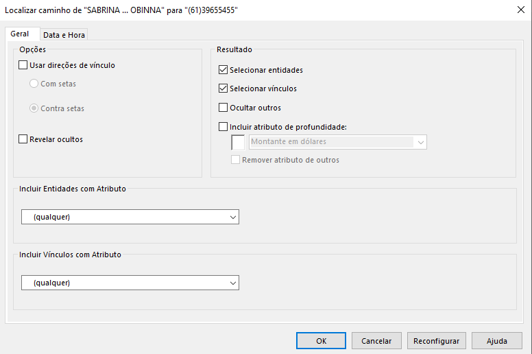
Figura 38 - Opções de configuração para localizar caminho entre entidades.
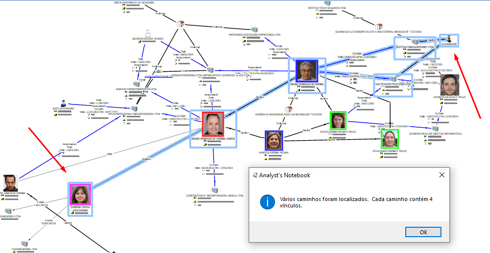
Figura 39 - Resultado da buca de localização de caminho entre entidades.
É possível visualizar a distribuição de dados e selecionar e filtrar os dados com base em categorias e intervalos de dados. A visualização da distribuição e da filtragem ajuda a identificar, por exemplo, picos de atividade no diagrama.
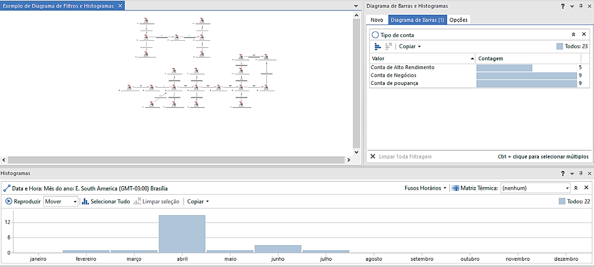
Figura 40 - Exemplo do uso de barras e histogramas.
A análise de vínculos representa uma evolução natural e necessária das técnicas investigativas tradicionais, respondendo aos desafios impostos pela crescente complexidade do crime organizado contemporâneo.
A suíte i2, como representante do estado da arte em software especializado, demonstra como a tecnologia pode potencializar as capacidades analíticas humanas sem substituí-las. A especialização investigativa do software, com sua biblioteca de símbolos, tipos de vínculos pré-configurados e funcionalidades analíticas avançadas, oferece aos investigadores instrumentos precisos para transformar dados brutos em conhecimento relevante.
Os benefícios práticos da análise de vínculos são evidentes: transformação de informações complexas em representações visuais compreensíveis, identificação rápida de elementos centrais em redes criminosas, descoberta de conexões não evidentes, otimização na alocação de recursos investigativos e impacto probatório significativo em apresentações judiciais.
Entretanto, é fundamental reconhecer que a análise de vínculos não constitui uma solução mágica para todos os desafios investigativos. A técnica apresenta limitações importantes, incluindo dependência da qualidade dos dados disponíveis e necessidade de validação humana constante. Estas limitações não diminuem o valor da técnica, mas exigem que os investigadores a utilizem com discernimento e conhecimento técnico adequado.
A aplicação bem-sucedida da análise de vínculos requer investimento em capacitação profissional, desenvolvimento de protocolos padronizados e criação de uma cultura organizacional que valorize a análise sistemática de dados. As instituições policiais que desejam implementar eficazmente a técnica devem considerar não somente a aquisição de software especializado, mas também o desenvolvimento de competências analíticas em seus quadros.
O futuro da análise de vínculos aponta para integração crescente com tecno logias emergentes, incluindo inteligência artificial, machine learning e análise de big data. Estas tecnologias prometem automatizar aspectos rotineiros da análise, permitindo que os investigadores se concentrem em interpretações que requerem experiência e conhecimento contextual. A combinação entre capacidades humanas e tecnológicas representa o caminho mais promissor para o desenvolvimento futuro da investigação criminal.